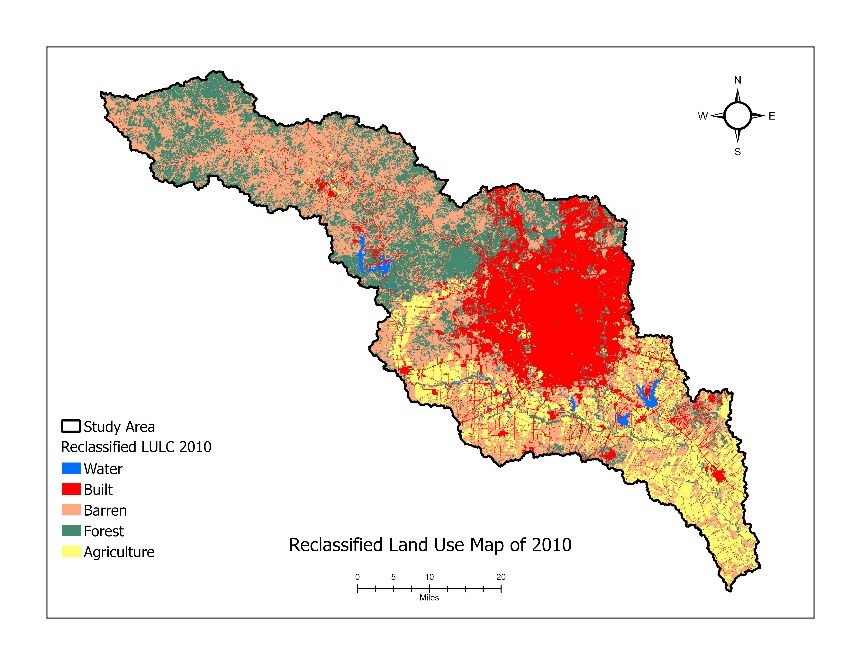
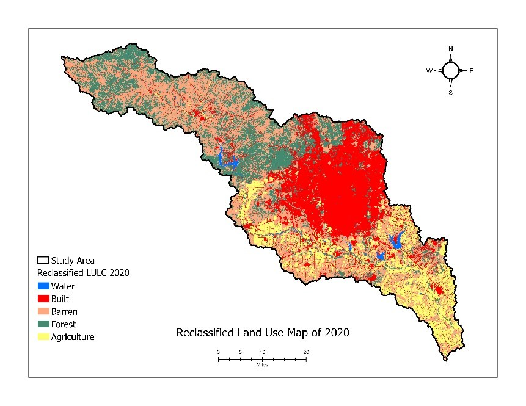

Problem & goal
Urban growth changes watershed hydrology: more impervious surface means more runoff and flood risk. Knowing where a city will expand lets planners act early. The goal: model and forecast San Antonio's urban growth to 2030.
This isn't a snapshot — it's a prediction, built from real transitions and validated against what actually happened.

Data
- DEM (USGS) for watershed delineation.
- NLCD 2010 & 2020 (MRLC) for land cover.
- Roads (TxDOT) and attractive features (OpenStreetMap).
Method
- Delineate watershed from DEM (Fill → Flow Direction → Flow Accumulation → Snap Pour Point → Watershed).
- Reclassify NLCD 2010 & 2020 into 5 classes.
- Compute the 2010→2020 Markov transition matrix in Python.
- Build CA spatial factors: normalized distance to roads, highways, and facilities, plus 3×3 neighborhood influence.
- Transition potential:
TP = α·Markov + β1·roads + β2·highways + β3·facilities + β4·neighborhood. - Calibrate weights & threshold against observed 2020 (maximize Figure of Merit), then simulate 2030.


Results
0.85Figure of Merit (validation accuracy)
β4 = 7Neighborhood influence dominated growth
~5,453 km²Watershed study area
From 2010 to 2020, 4% of barren, 3% of agriculture, and 2% of forest converted to built; built land was >99% stable. The 2030 forecast shows continued growth near the city core and along highways. Validation (predicted vs. observed 2020) confirmed the model with low false positives and negatives.




Limitations & next steps
- Drivers limited to proximity and neighborhood (next: demographics, economics, policy, climate).
- Two-date Markov assumes stationary transitions; 30 m resolution; single watershed.